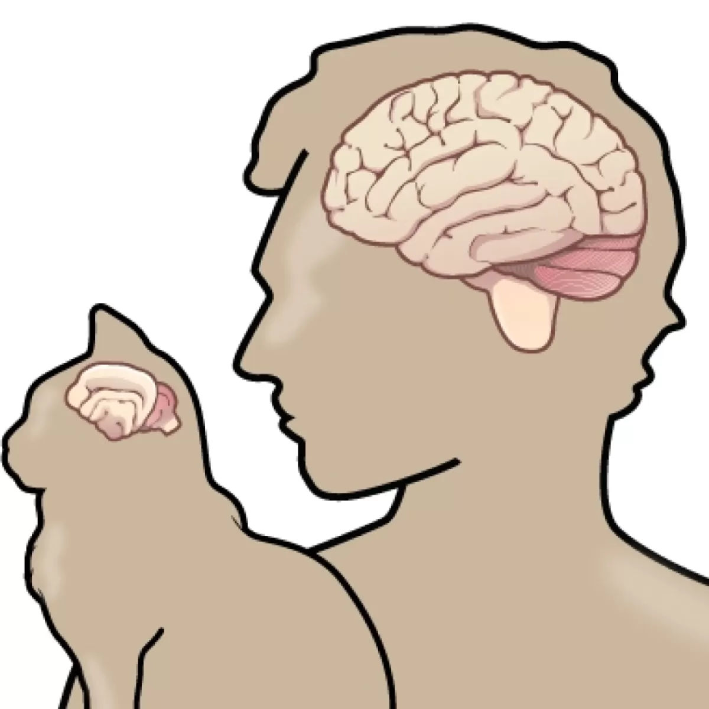

Scientific Evidence of Cat Emotions

Neurological Insights
The feline brain shares similarities with the human brain, particularly in the limbic system—the area responsible for emotions. Cats also release oxytocin, the "love hormone," when interacting with their humans, highlighting their capacity for affection and bonding.
Behavioral Studies
Behavioral observations confirm that cats grieve the loss of a companion and display jealousy if attention is diverted elsewhere. They exhibit signs of stress when their routine changes or their environment becomes unpredictable.